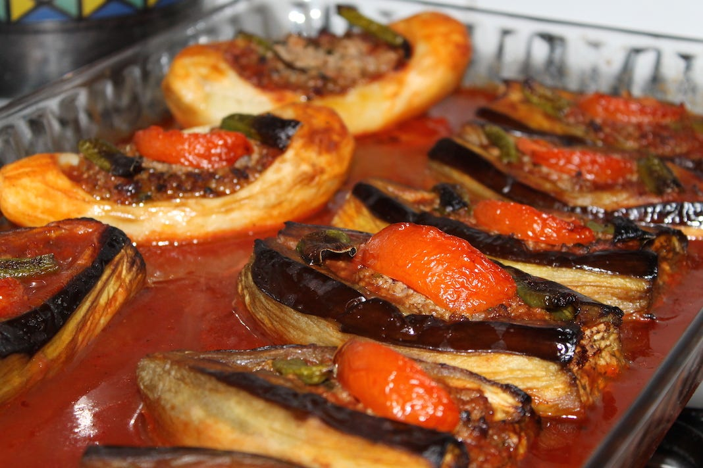

Home
Karniyarik

Description
Karniyarik is one of the most loved and delicious eggplant dishes in the Turkish cuisine. It is similar to another Turkish dish imambayildi which is same as the karniyarik except for that imambayildi does not contain meat.
Ingredients
- eggplant
- onion
- pepper
- garlic
- oil
- salt
- black pepper
- red pepper
- tomato
- minced meat
- tomato paste
Steps
- Peel the eggplants and then cut them in half
- Fried the eggplants
- Cook onion, pepper, garlic, tomato, and minced meat in hot oil adding black and red pepper
- Stuff the eggplants with this mix.
- Prepare a sauce by adding a cup of hot water to the tomato paste of one tablespoon
- Put the eggplants into the tray and place the tray into the furnace
- Bake for 30 minutes